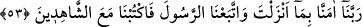
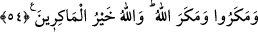

53. (Havârîler:) Rabbimiz! İndirdiğine inandık ve Peygamber’e uyduk. Şimdi bizi
(birliğini ve peygamberlerini tasdik eden) şâhidlerden yaz, dediler.
“Ey Rabbimiz, biz senin indirdiğine îman ettik.” Yani Îsâ’ya indirdiğin İncil’e îman
ettik.
Bu cümle, Allah’a arzettiklerinin bir ifadesidir. Bundan önceki cümle de, kendilerini
peygamberlerine arzettiklerinin ifadesi idi. Hallerinin tam mânasıyla anlaşılmasını
istediler. “Peygambere tâbi olduk.” Yani, Îsâ’ya dîni üzere tâbi olduk. Din işlerinden
neyi getirip neyi bıraktı ise hepsini kabul ettik. Bu kabule, peygambere yardım
konusunda tâbi olmak da öncelikle dâhildir. “Bizi şâhidlerle birlikte yaz.” Yani senin
vahdâniyetine şehâdet edenlerle veya tâbilerine şehâdet eden peygamberlerle; yahud
Muhammed (s.a.)’in ümmetiyle birlikte yaz. Çünkü onlar bütün insanlar üzerine
şâhiddirler. Bu sözde, iyilerin kitaplarının semâlarda meleklerle beraber olduğuna
işaret vardır. Nitekim Cenâb-ı Hak, “Hayır hayır! Ebrârın yazgıları ılliyyîndedir!”
(Mutaffifîn, 83/18) buyurmuştur. Allah onların nâmını mü’min şâhidlerle yazdığı zaman
mele-i a’lâda ve mukarreb melekler yanında adları anılacaktır.
54. (Yahûdîler) tuzak kurdular; Allah da onların tuzaklarını bozdu. Allah, tuzak
kuranların hayırlısıdır.
“Onlar bir hile yaptılar.” Küfürlerini Îsâ’nın hissettiği yahûdîler, Îsâ’yı kim vurduya
gidecek şekilde öldürecek birini vazifelendirdiler. Îsâ (a.s) oyuna gelerek onların
dediği yere giderse o kimse Îsâ’yı öldürecekti. “(Buna karşılık) Allah da onlara bir
hile yaptı.” Îsâ’yı göğe çekip, şüpheleri Îsâ’yı öldürmek isteyen şahsın üzerinde
topladı ve onu öldürttü. Onların hilesine karşılık böyle bir tuzak kurdu. “Allah, tuzak
kuranların en hayırlısıdır.” Hilesi en kuvvetli, tuzağı kurtulunmaz olandır. O, kimsenin
ummadığı yerden zarar ulaştırmayı en iyi bilendir.
Rivâyet olunduğuna göre İsrâiloğulları’nın kralı, Îsâ (a.s.)’ı öldürmeye karar verdiği
zaman, ona küçük pencereli bir eve girmesini emretti. Cibrîl (a.s) Îsâ’yı o küçük
pencereden göğe yükseltti. Onu kuş tüyüne bürüdü ve nûra garketti. Yeme içme lezzetini
ondan giderdi. O, Arş’ın etrafında meleklerle beraber uçtu. İnsî, melekî, semâvî ve
arazî oldu.